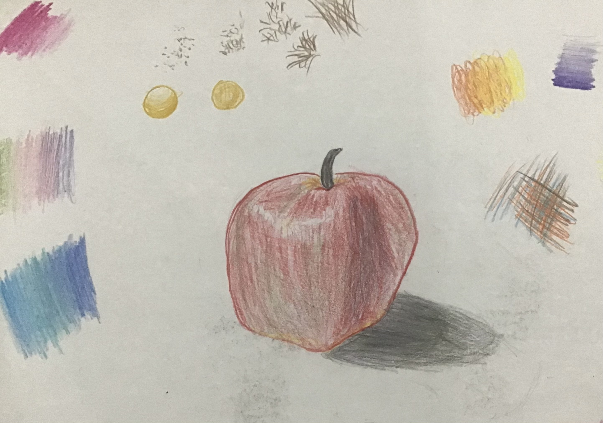
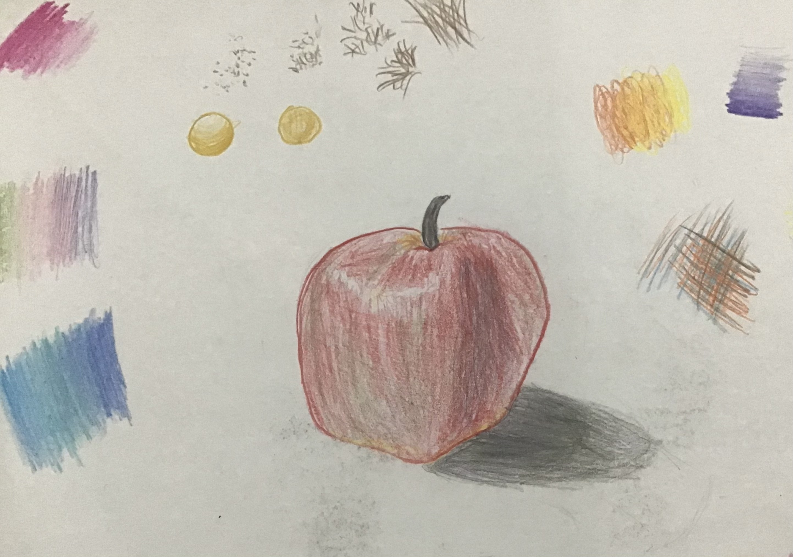
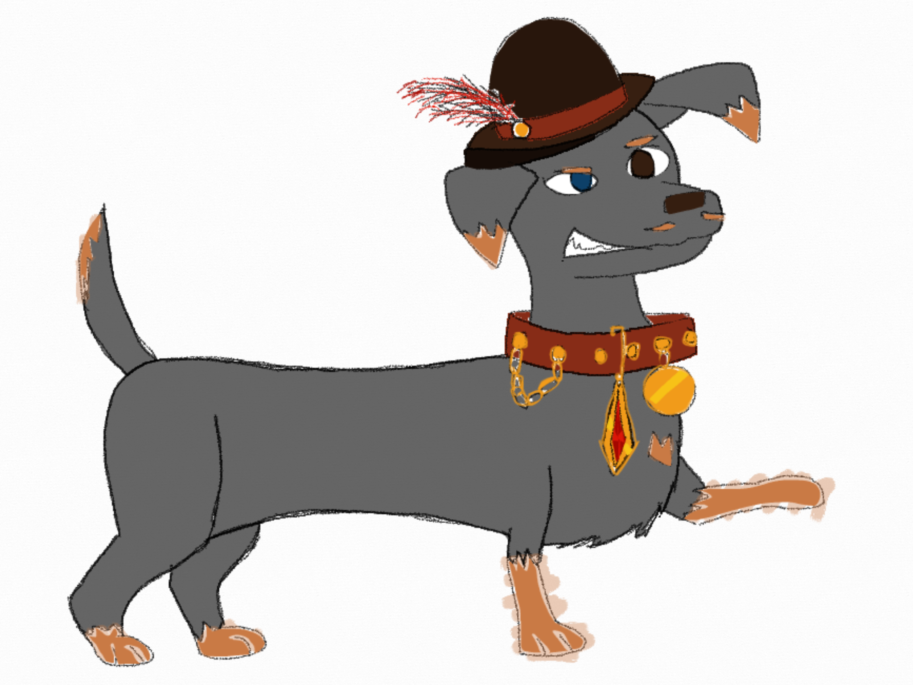
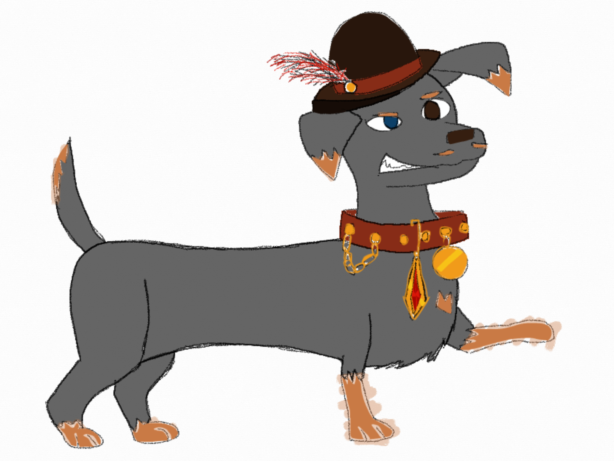
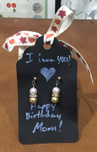
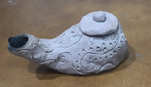
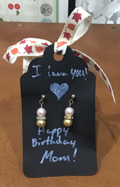
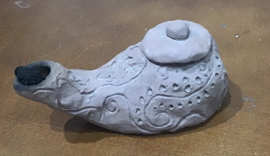
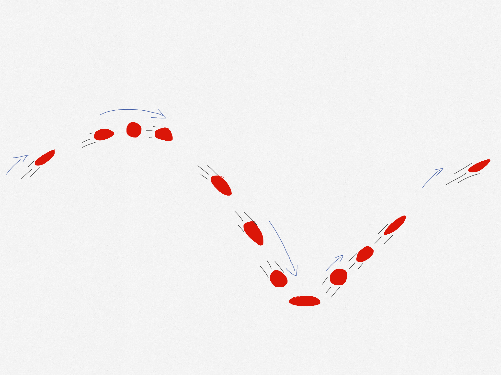
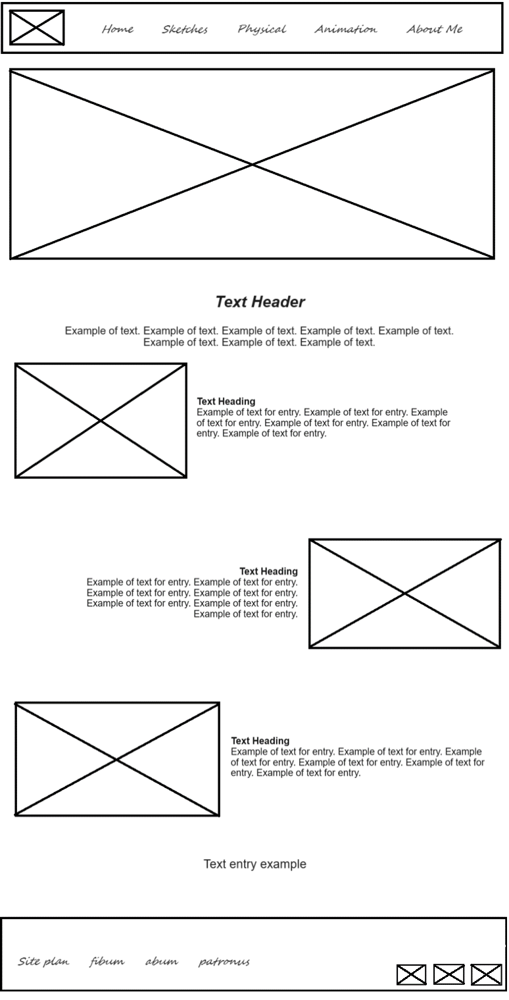

Overview
Purpose
The purpose of this site is to act as a portfolio of my various art pieces and display them in one place.
Audience
For mostly myself, but also others that may be of interest, like professors, employers, etc.
Branding
Website Logo

Style Guide
Color Palette
Palette URL:
https://coolors.co/5d576b-8884ff-d7bce8-e8cee4-fde2ff-ffce0a-ffe999-fffaea| Primary | Secondary | Accent 1 | Accent 2 |
|---|---|---|---|
| [#8884FF] | [#5D576B] | [#D7BCE8] | [#E8CEE4] |
Typography
Heading Font: Satisfy
Paragraph Font: Open Sans
Normal paragraph example
Doodle doodle doodle. Art is so much fun to do: whether it be drawing and painting, beading jewlery, or even making animatics and sewing clothes for my plush Build-a-Bear Workshop bunny that I named "Fluffy".
Colored paragraph example
My favorite things to draw are animals and nature in general. I also enjoy those how to draw the characters that are included in the bonus features of movies.
Navigation
Photos
home
Just the intro to what this page is.
 

 

Sketches
Where the 2D art is featured.


Physical
Where the more tangible pieces are featured.

 




Text for Site
Home Page
Welcome
My Personal Art Portfolio
This is where I'll be showcasing several pieces of work that I've done, whether it be simple drawings to something more complex like sewn garments or animatics. They can be found in the following categories:
Have a look around, and enjoy my handywork!
Sketches
My absolute favorite form of art that I will always fall back to will be drawing. It's always been an enjoyment for myself and I will take the chance to draw whenever and wherever: all of my notebooks from elementary school to even my college notes have some form of doodle on them.
Vase: This picture is of a bouquet of flowers that my mother had recieved on mother's day.
Fox: I loved animals since forever, and most of what I end up drawing are animals. This one is a colored drawing of a fox.
Robin: This one was based off of a gift I had gotten from Christmas.
Physical
This section is dedicated to the more tangible pieces I've made. I find it very satisfying to be able to make something and to see the result of the work.
Dress:While learning how to sew clothes, I made a couple of outfits for my Buil-A-Bear plush. Made from left over fabric from a revious project, this dress is my favorite.
Lamp:This was made during a church activity focusing on the parable of the Ten Virgins. I had fun adding the embelishments, and this does work. The light that comes from it is dim though.
Earrings: I've made several beaded jewlery, this pair of earrings one of them. This was made for a birthday gift.
Bracelets: Some more of my beaded work, this time featuring two bracelets.
Animation
This page will be dedicated to my work brushing up on animation, both the principles and, later on, tools used for making the animatics and the more finished products.
Principles of Animation
The Principles of Animation are the basics that give any animated piece life. The twelve principles are as follows:
Squash And Stretch
Squash and Stretch is when the subject (character or object) does what the name suggests during movement, giving the subject the illusion of volume and weight. The most common example of this is a bouncy ball in animation, where is squashes down on impact with the ground and stretches out when it flies back up into the air.
Arc of Motion
The bouncy ball example is also a good example of Arcs of Motion. Basically, nothing ever really moves perfectly straight. There’s always some form of curve that the subject would follow. In the picture above, our bouncy ball follows an arc on its path, cresting upwards before making its descent back to the ground.
Anticipation
This is a tell, a preemptive action, that tells the audience what main action is about to happen and when. Before you attempt to make a leap, you might squat down in preparation. This would be the anticipatory action to the big leap.
Slow in and Slow Out
Think of Newton's Laws of Motion for this one, namely the first one: What starts at rest wants to stay at rest and what’s in motion stays in motion. Slow in and slow out incorporate this into an animated piece by having more sketches (frames) where the object would be slower and fewer sketches in where the object will be faster.
Follow-Through and Overlapping Action
This principle is when the secondary parts of the main body of the subject follow along the path of motion. When a girl swiftly turns her head, her ponytail would be swung about thanks to the initial motion, the ponytail engaging in this principle.
Timing
Timing is the amount of frames per second, which would give you the speed of the actions. The more frame means a slower action and fewer frames gives you a faster action.
Straight-Ahead and Pose to Pose
This is basically how you are implementing your sketches.
Straight-Ahead is when you just sketch each action as you go along. Pose to Pose is when you first sketch out the important moments of the action, such as the starting point and the ending point, before you go back and fill in the rest of the action.
Both are useful in certain situations, like pose to pose is good for getting the timing of certain actions down while straight-ahead can have a more organic feel to it. It all depends on what you need.
Staging
Staging is the viewpoint of the audience and arrangement of the subjects in your film. Choosing the staging helps in communicating what’s happening and different angles of the same scene can have different impressions on your audience.
A good thing to remember when you’re posing characters is imagining them as shadow puppets: If you can clearly see what they are doing when they’re in this state, you got good staging.
Solid Drawing
This one is basically depicting your subjects in 3D space.
Secondary Action
This action acts as an emphasis to the main action that is happening. An example of this could be that your main character is talking angrily to one of her friends and is strangling whatever is in her hand.
Exaggeration
Remember those times when cartoon characters were so shocked, their jaws dropped? Literally, onto the ground. This is an example of exaggeration, where blowing normal proportion to more exaggerated scales can make an emotion more defined and add a degree of appeal visually. Speaking of appeal…
Appeal
This one is a little more subjective, but it basically gives your character visual appeal, making them engaging and interesting. The audience will want to follow the character on their adventure when the character can appeal to them in some form. Applying previous principles, like squash and stretch, aids in a character’s visual appeal.
Site Map

Wireframes
Home
Sketches
.png)
Physical Pieces
.png)